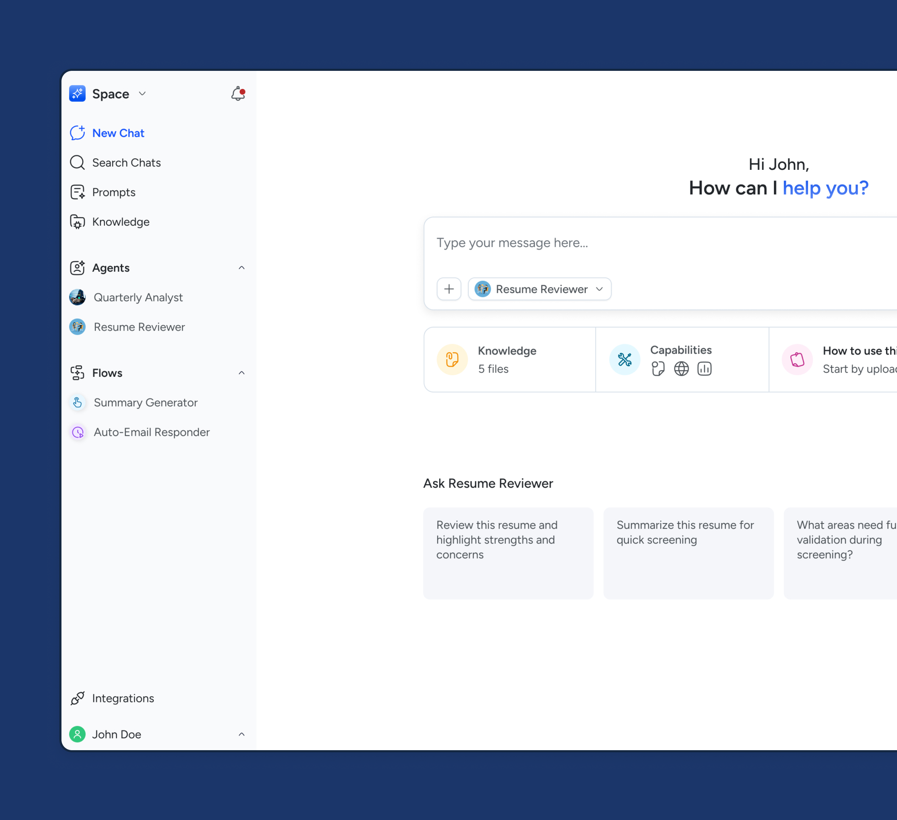
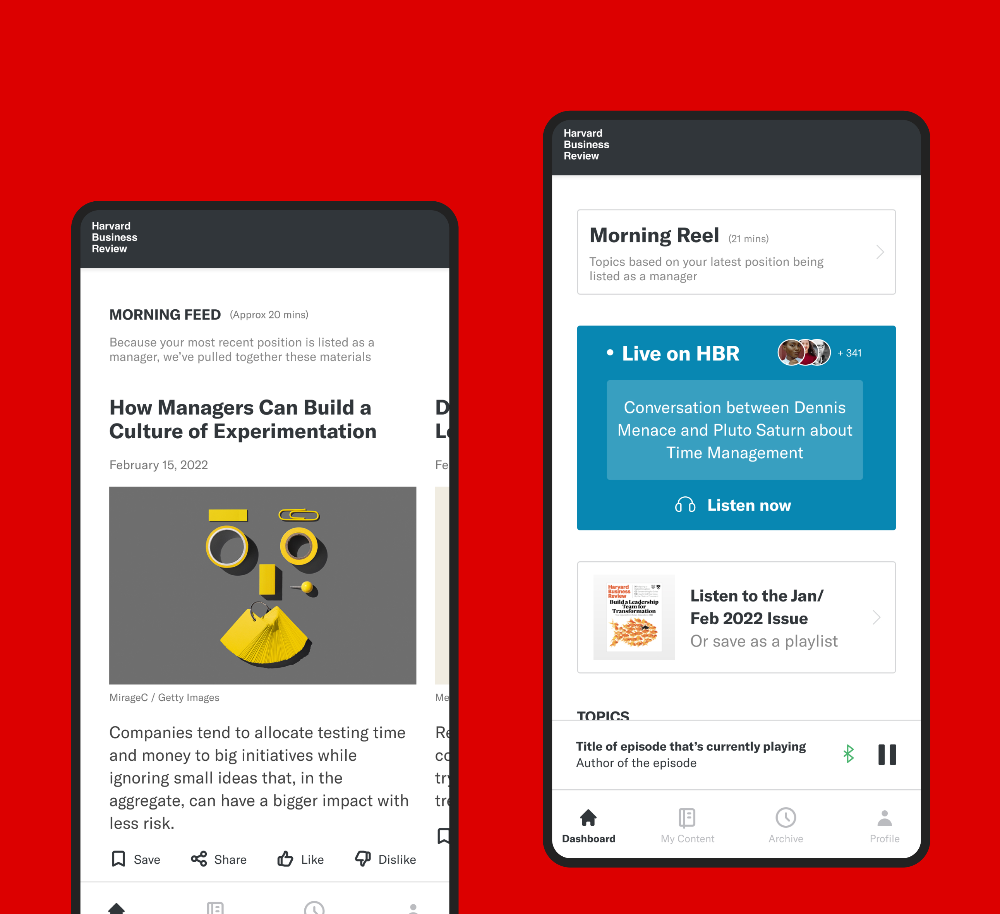
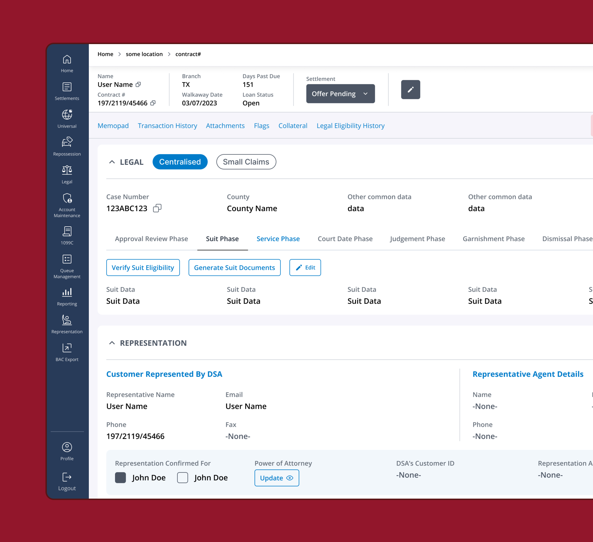
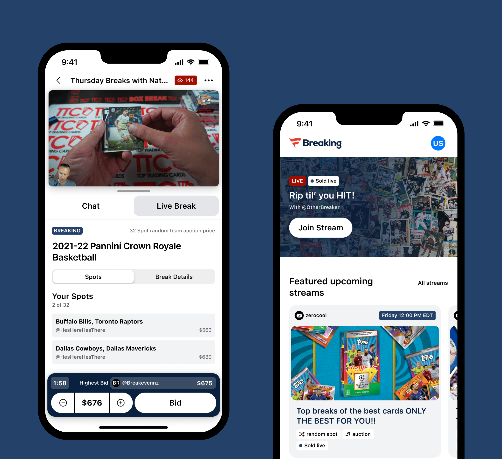
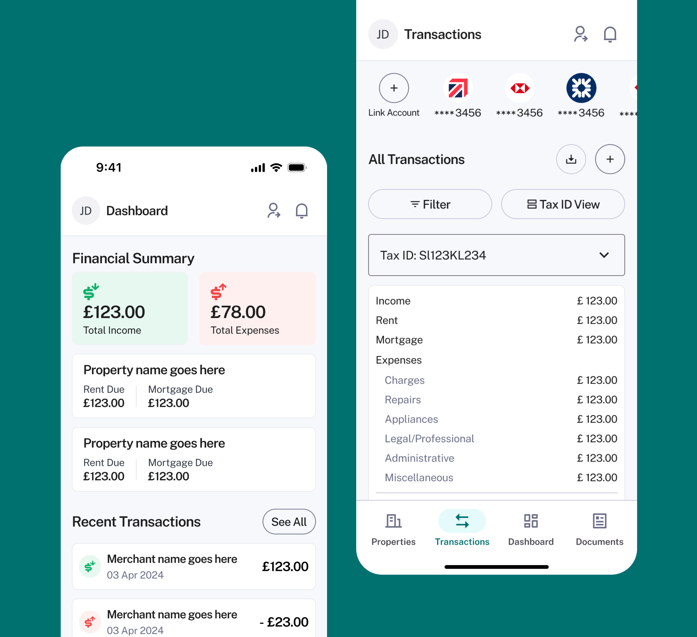

Hi, I'm Divya
Vasudevan
A product design generalist with 7+ years of experience turning ambiguous, early-stage ideas into shipped products.

Enterprise AI Platform
From idea and early wireframes to a multi-sector AI productivity platform — built, tested, and evolved over two years.

HBR Design Sprint
A 5-week sprint exploring brand-worthy mobile concepts to engage a younger, global audience for Harvard Business Review.

Training Manual In-Product
Embedding a fragmented legal-ops training manual directly into the product — turning onboarding complexity into a guided, product-native flow.

Fanatics: Breaking app
Designing an intuitive mobile experience for collectors on the Fanatics breaking platform.

Property Management UX
A two-week sprint refining a property management platform for landlords and managers — investor-ready and genuinely usable.
I design the first version — and the version that scales.
- Design discovery & 0→1
- UX for and with AI
- Prototyping in code
- Design systems
- User research
As product designer who started out in development, I found myself increasingly drawn to the questions behind the code: why are we building this? Who is it for? How can we make it easier to use? Watching my front-end colleagues bring interfaces to life sparked my interest in design.
I've spent much of my career working with startups, helping teams take products from idea to reality. A few years in agency environments taught me how to adapt quickly, navigate ambiguity, and collaborate with all kinds of people across different industries and stages of growth.
I'm a generalist at heart. I enjoy moving between research, strategy, interaction design, systems thinking, and execution — whatever it takes to create experiences that feel intuitive and useful.
Outside of work, you can often find me lost in a novel, drawn to characters and worlds that stay with me long after the final page.